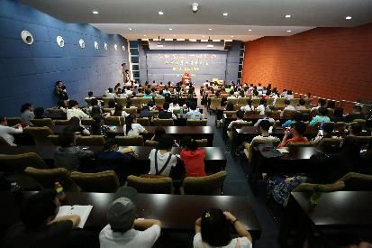
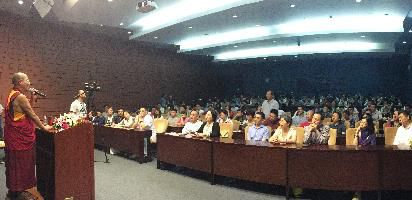
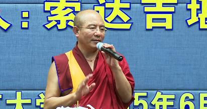

佛法智慧与智慧人生——南京大学演讲
『2015年6月29日』
主持人致辞：
佛教作为中国文化的重要组成部分，对当下的世道人心起着重要的作用。佛教不仅是一种信仰，更是智慧的思维方式，是中国文化的核心组成部分。不论是大乘、小乘，或是显、密，目的都是“诸恶莫作，诸善奉行”，培养世人的一颗菩提心和慈悲心。
本期我们特邀主管五明佛学院的索达吉大堪布，给大家作“佛法智慧与智慧人生”的专题讲座。在堪布站在讲台上的时候，我不禁有一个想法，想先做一个互动，大家可以就“你为什么来到这里？”提几个问题，请堪布开示。

快问快答
观众：我来到这里，是因为有一个小小的问题：我以前读《金刚经》，里面讲的是“空”的道理。但是后来看到《观世音菩萨普门品》，上面又说遇到任何困难，拜观世音就可以解脱。这二者是不是冲突？
堪布：观世音菩萨是可以救苦救难。按照《普门品》的说法，大多数人通过祈祷，一定能遣除生活当中的各种灾难。这来自观世音菩萨的发心和我们祈祷他的信心，以及不可思议的缘起力。
关于“空”的内容，也有其他的解释方法。
观众：我是一个大学老师，希望能把佛法的慈悲与智慧融到我的教学中。但是我的智慧不够，该怎样增长这方面的智慧？
堪布：需要善巧方便，多念“嗡阿热巴匝纳德”，祈祷文殊菩萨。
观众：堪布第一次来南京的时候，由于因缘不足，我没有赶上，今年堪布第二次到南大来，我才有机会听到堪布的演讲。其实这不是一个问题，而是祈请，希望堪布能多来江苏，多来南京，给我们传授智慧，教育我们走上真正智慧的人生路。
主持人：非常感谢！她其实已经帮我开场了，我觉得再提问，就要被轰下来了。下面大家用热烈的掌声，欢迎堪布演讲！
一个月的密密行程
各位老师、同学，今天借这个机会，我们一起分享“佛法智慧与智慧人生”。这个题目是校方出的，上午我想了一下，感觉好像太大了。一方面“佛法智慧”非常广，有世间智慧、出世间智慧，出世间智慧当中又有显宗智慧、密宗智慧等等；另一方面“智慧人生”的范围也很广。现在大家经常提“佛法智慧”，但其实对佛法智慧的体系，还缺少一种认知和共识，这样泛泛而谈，可能会流于笼统，在以后的研讨、讲座或者学习中，要更细化一些。
这是我第二次来南京大学演讲，很高兴。记得第一次来南大，应该是2011年，后来，2013年来南京，2015年来南大，几乎每隔一年来一次。这趟我出来了二十多天，将近一个月，南京大学是最后一站。
我是6月1日从佛学院出发的，当天去了上罗科玛和下罗科玛两个学校；3号飞北京，在中国中医科学院、北京大学、中国传媒大学和两个佛教中心演讲；8号飞澳门，在澳门大学和一个佛教中心演讲；11号飞广州，在华南理工大学演讲，还做了一场企业讲座；13号临时飞四川，参加佛学院的一个建筑方面的会议；14号又飞青岛，在青岛恒星科技学院、一个监狱、一个佛教中心、一个爱心慈善机构演讲；18号飞上海，在上海外国语大学和一个佛教中心演讲；20号飞海口，在海南大学、一个监狱、一个佛教中心演讲；24号飞厦门，去了一个监狱；25号又去了武夷山的一个监狱；27号，也就是前天，才从武夷山飞回厦门。原本要搭乘当天下午6点的飞机来南京，结果因为南京暴雨，在机场等了一天，到下午5点的时候，说航班取消了，只好在机场过夜。到了28号凌晨，实在找不到飞南京的航班，就先飞上海，再坐车过来。昨天下午在南京农业大学那边做了一场演讲，今天是最后一场大学讲座，明天就回四川了。
从6月1日到30日，正好是一个月时间，就这么到处奔跑。今晚的讲座我也没有很多时间准备，再加上不停地飞，不停换地方，每到一个城市，讲完几场，刚刚开始适应，又要去下一个城市，人的思维也好像有点乱乱的。不过也没事吧，还是可以跟在座的老师、同学交流、分享。
我的想法大家不一定完全认同，可以求同存异，取其中的共识，保留不同的观点，还可以在后面的问答环节中，直接、尖锐地提出来。欢迎大家辩论，我能解答的就解答，实在不能达成一致的，或者你觉得“这根本不合理”，也完全可以抛弃。这种自由交流，也许对年轻学子稍微有一点抛砖引玉的作用。
做这些交流的目的，不是求名声利益，不是求所谓的世间八法，这些对出家人来讲，因为知道了它的本质，应该不会太执著。那目的是什么呢？在座的年轻人，事业、家庭，很多方面都刚刚起步，这个时候，如果在心灵的境界上，稍微能得到旁边人的指点、提醒，也许会有帮助。
被忽略的“人生大事”
现在的学校教育、社会教育，大多比较看重外在的物质层面。我在机场书店里看到，百分之七八十的畅销书，讲的都是成功学，怎么发展事业、怎么赚钱、怎么获得成功......而与此同时，可能忽略了人生一些最关键的问题：内在的信仰、道德，生老病死，等等。
有些人是因为各种原因，完全忽略了；有些人在某段时间会去关注，但或许因缘不太具足：想看一些这方面的书，虽然网上有很多，宗教类的、佛教类的，但不知道从哪一本入手；想依止一些心灵导师，虽然社会上也比较多，但不知道该听谁的。
一个指引，或许改变一生
人站在十字路口的时候，一般都需要得到指引。尤其在人生刚起步的阶段，这些指引也许对你很有用。
我们寺院里有一个老法师，今年87岁了。他二十来岁的时候，曾经依止过一个老师，叫意科喇嘛。第一次见面，老师就给了他人生最重要、最关键的几个指点，他到现在仍记忆犹新。
以前那个时代跟现在确实不太一样。现在是碎片知识的时代，每个人看到、听到的东西都太多了，今天是这个，明天是那个。而以前的人，学过的知识、得过的窍诀，会用一辈子。
大概是前年，我有机会跟这个老法师在草地上聊天，特意问他：“听说你年轻的时候依止过一个很著名的上师，当时情形怎样？”他就把一面之交的整个过程描述给我听，包括那位上师讲了什么教言，他如何把它用在之后的人生里。
所以我想，人这一生，如果能遇到一个善知识，得到哪怕一句“诸恶莫作、诸善奉行”，也许会受益终生，甚至改变生生世世的命运。这也是佛法的智慧。
宏观的蓝图
那什么是佛法智慧呢？从深度上、广度上，都有不同的了解方法，关键看你从哪个方面来看。
在座的老师、同学，各自的层次也不相同，有些是多年带博士生的博导；有些可能只是大学一二年级的学生，众口难调，我不一定能讲出让所有人都接受的道理。但其实佛法智慧在面对人生关键问题时，是有一个总体蓝图的，就像指南针或者罗盘，能对我们的人生指点出一个大概的方向。它不会描述人生的每一小段要怎么走，也不会标出地图上的所有细节。当然，在讲述某个具体修法，或者身体的气脉明点时，也会很细致，但佛法智慧更多还是在一个宏观的角度，把人类心灵的来龙去脉，它的来处、去处、当下的状态、现象和本质……讲得清清楚楚。
一种“仁智”的教育
应该说，我本人是站在一个公正的立场来看待佛法智慧的。有时候，人们会对佛教过于神秘化，把它当作除了极个别住山的出家人以外，世间的在家人、俗人都碰不得、摸不得的东西。觉得最多去寺院里烧香拜佛，求求保佑，除此之外，跟佛教没什么可接触的。
这种想法并不对。佛教是非常有次第性、传承性、系统性的教育，这种教育各种层次的人都可以接受，从孩童到年轻人、中年人、老年人，每个人都可以在佛法智慧中，接受他所需要的知识。但现在因为社会环境的变化、各种因素的影响，很多人所认为的“佛教”，跟真正的佛教相隔千里。
其实佛教的教育，就像这里“仁智讲座”的名字，既有仁，也有智。仁是道德、仁爱、慈悲；智是智慧、妙慧，或者人们常说的懂得取舍的意识形态。佛教就是把仁爱和智慧结合起来的一种教育。
但是很多人把它神秘化了，认为佛教就是在佛菩萨面前求保佑，如果能够事业顺利、生活圆满，就是佛教给我的加持。而从来没有想到，佛教里其实有对整个世界和人生的描述，里面包含了方方面面，尤其是对内心负面情绪的分析，痛苦是什么？如何对治？如何把它转为道用？这些对我们来说更为重要。
但可惜的是，很多人都没有去了解。
系统学习，才能辨别真伪
近几年，学佛的人慢慢多起来，一些知识分子、公务员，也开始研究佛法，这可能是受国家政策和领导人思想的影响。但与此同时，也出现了很多鱼龙混杂的现象，一些根本不属于佛教的东西，被挂上佛教的招牌，就像世间讲的“挂羊头卖狗肉”，这类现象此起彼伏，在各地都有发生。
以前我去东南亚，那里的佛教通常比较开放，但乱象也很多：以佛教名义宣扬邪教的，利用佛教做企业、搞世间法的，等等。
而遇到这些现象的时候，如果我们没有系统学习过真正的佛教道理，自己可能就会参与其中，做很多不如法的事情。所以作为知识分子群体，作为大学里的老师和同学，不应该只是把佛教定位成一个求保佑的宗教，如果是这样，我们就与佛教的本来面目隔着一定的距离，很多真相也会被掩盖。希望大家能正确对待佛教，用正知正念寻找佛教的正见。
总之，佛教既不是迷信，也不是谁都没办法接触的神秘领域。这些都只是人们的想象，并不合理。
佛教是一种真正的智慧。从深度上讲，万法最终被抉择为一种不可思议的空性，所谓“四大皆空”，就像《中观根本慧论》《中观四百论》《入中论》《中观庄严论》《金刚经》等讲到的那样，抉择的都是同样的般若空性的境界；从广度上讲，则是爱与慈悲，这方面的道理也胜过世间许许多多的宗教，有的境界甚至令人难以想象。这些你都可以去了解、去接受。

什么都不信的“迷信”
在座的很多人也许都想过“佛教到底是什么？”“我到底有没有信仰？”
我看到一个美国的关于信仰的最新统计，和以前的一些结论有所不同。里面说，全世界七十多亿人口中，有宗教信仰的占61%，没有的占12%，剩下27%的人持中立态度，也或许是想隐藏起来，不愿表态。这是一次在全球65个国家范围内进行的调查，当然，这些数据不一定确切，毕竟他们没有一个一个地问我们，即便问了，也不见得每个人都如实相告，但从这些结论能大概了解人类的信仰状况。
反观我们自身，有些地方的学校和老师认为没有信仰很光荣，“我没有任何信仰”“我不信这一套”。尤其在这个新时代，很多人认为什么都不信是一种个性和魅力，老师同学都会赞叹：“哇，他很不错！”
但真是这样吗？你们要观察。如果原本是合理的、正确的、真实的，你偏不信，这样会不会反而成了迷信？
当然，如果原本就是不合理的、非法的、欺骗的，你“不信这一套”就对了，值得赞叹和提倡。但实际上，很多年轻人处在不信佛的环境中，受到家庭和社会的影响，对佛教的真实面目了解并不多，很多时候只是凭想象在抉择自己的信仰、评判别人的信仰。这是需要反思的。
佛法要“智信”
信仰有智信和迷信。盲目的迷信，我们都知道是不好的，包括佛陀也认为：“比丘与智者，当善观我语，如炼截磨金，信受非唯敬。”意思是，不管是出家人还是世间智者，你们对我的语言应该善加观察，觉得合理的才接受，觉得不合理的要舍弃，就像古印度用16道工序锤炼黄金一样。千万不要因为这是佛说的，就盲目相信。
这是佛亲口所说，我觉得这样的态度非常公正。印度古法锤炼黄金的过程，需要反复打磨很长时间，用各种方法来考验。同样，你们也可以用各种方法，看看佛教到底合不合理，比如把疑问提出来，或者和人辩论。
我也会在每次演讲中留出一个时间，让大家提问。你们不要觉得“这是一个出家人，他一个人穿着这样的衣服站在讲台上，我不能问他问题，万一他答不出来，在这么多人面前太没有面子了，好可怜，我还是发一个大大的悲悯心，给他留条后路，不然他以后可能连饭都吃不到......”（众笑）
不用这么想。如果佛法确实有不对的地方，你完全可以直截了当地提出来，甚至批评、驳斥，都是合理的。因为它是智信，不是迷信，我对此深信不疑。
说实在的，我也不是因为别人说什么就信，别人去磕头我也去磕头......刚进寺院的时候，的确会这样，一看到上师就很生信心，但后来觉得，这还不是最好的信心。最好的信心是什么呢，先用智慧去观察，观察彻底了，再去相信它。佛教的信仰就是这样。
希望在座各位能对佛教有一种智信，这很重要。
在生活中去实践
然后，还要把佛法应用于生活中。这个时代的人比较浮躁，加上没有明确的人生目标，往往过得糊里糊涂。尤其很多大学生，总是非常着急。急什么呢？要毕业了，急着创业、找工作；工作找到了，要成家，急着赚大钱、买豪宅、买豪车......想要的很多，却很少满愿。
其实人生没必要那么急。因为大部分人只能活到七八十岁，顶多一百来岁，这一百年间，再怎么忙，也不一定都能如愿以偿；而每件事又有它自身的因缘和规律，不可能都跟随你的节奏，很多时候只是心忙而已，不可能一想什么事，马上就能成。
我经常接触大学生，很多同学的确眼高手低，觉得自己是本科生，一毕业就应该赚大钱。但其实现在的本科生供过于求，毕业后很难拿高薪。反倒是学历不那么高的人，在企业里老老实实做事，赚的钱也许还多一些。
要把自己的傲慢心降下来。二十年前、十几年前的大学生是特别受欢迎的，本科生、研究生、博士生，一个比一个吃香，但今天已经大不一样了，全球范围内，很多大学的就业都比过去更加开放。我从新闻里看到，包括德国、法国、英国在内的欧美国家，很多保安、环卫工人都是博士后，他们因为各种因缘，找不到合适的工作，就来应聘这些岗位。
因此我经常想，如果在你二三十岁的时候，就有机会接触佛教的一些理念，比如无常观、知足少欲观，还有个别的人生哲理，用来调整自己的心态、工作和生活，对将来的人生会是很好的指引。
海市蜃楼的启示
很多人一接触佛教，就疑惑是否还要争取事业、努力工作？这些是需要的。佛教并不是消极和悲观，你想赚钱，想做事业，都很好，只是不能太执著了。因为人生很虚幻，太执著的话，很多事情到头来可能是一场空。
龙猛菩萨的《大智度论》不知道你们看过没有，里面讲过一个故事，是关于乾达婆城（又名寻香城）的，也就是汉语中常说的海市蜃楼。故事说，有一群商人要穿过一片无边无际的沙漠。某天早上，太阳刚刚照耀大地的时候，他们看见远处有一座特别美丽的城市，城市里人来人往，感觉非常富裕。他们想，这个城市真好啊，在那里肯定能赚大钱。于是一起奔过去。他们跑得口干舌燥、筋疲力尽，但是随着时间推移，城市却逐渐消失了，这些人只有叫苦连天地继续前进。
走着走着，阳光一直炙烤大地，沙漠蒸腾出来的气体又变成了一种云雾，弥漫在地表，就像有水在流动——我们通常把这种景象叫做野马群或者阳焰水。商人们已经特别干渴了，看到这么清澈的水，又奋力赶去，等赶到的时候，才发现根本没有水，于是伤心得嚎啕大哭。
他们大哭的时候，听到四周传来人声，又欣喜若狂，认为已经到达了那座繁华的城市，结果却发现原来只是自己的回音。
最终他们意识到这一切都只是幻象，汉文中的“海市蜃楼”也是这样来的。
听说今天台下也坐着很多企业家，大家可能都希望自己的企业能做大、做强、做得非常成功......这没什么不好，只是我们不能太执著了，否则也许会像刚才那个故事里的商人们所经历的一样，觉得再有意义、付出再多努力的事情，到最后，当你离开这个世间，或者彻底明白了轮回的本质时，就会发现一切都是如梦如幻。虽然它曾经那么真实地存在过，但虚幻才是这世界的真实。
我们按照佛教的智慧来观察，就会切实体会到这一点。人们所执著、困惑、苦恼、焦虑的一切，其实并不存在。
佛经中曾有这样的记载。不同的人来问释迦牟尼佛，“我有这样那样的痛苦，应该怎么办？”佛给出的都是同一句话：“你不要太执著了，应该把它放下。”后来有个擅长小聪明的人，觉得佛答得不好，每个人的烦恼都不一样，答案怎么能千篇一律？于是他跑去指责佛：“您用同样的语言回答这成千上万的问题，恐怕不合理。”
佛问：“成千上万的人，在梦里感受成千上万的烦恼，如果把他们全部叫醒，梦中的这些恐惧、痛苦，还有没有呢？”那人说：“当然没有了。”佛说：“虽然是成千上万的梦，但只要从梦里醒来，就能全部止息。虽然有成千上万的烦恼，但只要一个方法，就能全部从中出离。”
我还没有讲到佛教更高的胜义谛智慧——听说在座个别人也学过中观，不知道你们学得怎样，但对胜义谛可能会有一点概念。这里是按照佛教世俗谛幻化八喻等的智慧在观察，世间万法确实是如梦如幻。也许有一天，你们会发现，现在特别执著的感情、生活、事业等等，其实都不是实有的东西，这才是它们的本来面目。
截然相反的观点
当我们以佛法智慧来观察人生，跟世俗的很多观点的确是比较抵触的。世间人所信奉的，在佛教看来可能恰恰相反。
比如现在的人喜欢自由，行为没有约束，想干什么干什么，如果跟他讲善有善报、恶有恶报，他可能很难接受，这跟佛教的因果观就有抵触。
又比如现在的人大多不相信前生后世，关心的只是短暂的今生如何生活，对除此之外的范畴是没有概念、不去思考、不愿承认的，这跟佛教的前世今生观又是一种抵触。
而因果、前后世，在佛法智慧中都是非常基本、简单、世俗层面的道理，如果对这些都不承认，对其他道理就更没办法理解和接受了。
世间再成功、优秀、高贵、荣耀的人，也不一定能看清万法的实质，关于生命、心识最基本的知识，大部分人都不懂。
有些人可能会说：“不懂也没事，我又不是佛教徒，何必要承认佛教里说的这些？”确实，如果业因果、前后世只是佛教的专利，非佛教徒不承认也是可以的；但如果它是所有人类，或者整个六道轮回的每一个众生都无法逃避的真实存在，那就跟你是不是佛教徒无关了。你可以不相信、不承认，但不管你信不信，真相就是真相。
有些人说：“那你要给我论证。”其实我没有必要给你论证。没有这个责任，因为我不是你的监护人，也没有这个精力去破除你所有的邪知邪见。但你对自己负有责任，你需要想一想，如果佛教讲的都是真的，要怎么面对？
临时抱佛脚，就晚了
人类还是很聪明、很有智慧的，可以登上月球，可以发明飞机——每次乘飞机，上去下来的时候我都感叹，现代科技好厉害，你看降落的时候，如果有丝毫的失误，就可能偏离跑道，非常危险，但雷达测得那么准，飞机刚好压在白线上，一两米的误差都没有。所以从物质上看，我们的科技已经发展到了这么高的层次，但在精神上，我们连心中最简单的烦恼也没办法对治，在生活中遇到最普通的无常，也没办法面对。我们往往在事情发生之后，才去痛苦、去思考，但这可能没有意义。
最近看到网上说李开复是“向死而生”。他是企业界的偶像，自从2013年突然查出淋巴癌，就引起很多人的关注。很多人在想他会不会死，什么时候死啊？但这几年过去，他不但没有死，还在和病魔抗争的过程中悟出了很多道理。他和星云大师有过交流，也经常公开发表一些自己的观点。
我一方面欣赏他的勇气，觉得很了不起；另一方面又觉得，其实佛教的智慧并不是要等到病魔缠身、灾难降临的时候才去了解的，这个时候已经来不及了。他还算幸运，没有马上死，稍微有一点思考的时间，还有跟大师探讨佛法的机会——我看过他的书，的确问过一些宗教方面的问题。但即便是这样，可能也解决不了生死大事。
佛教的生死观，是在你没有生病、没有衰老的时候，就要去观察：到底生是什么，死是什么？当死亡来临的时候，能不能认识自己的心，能不能救护自己，能不能选择下一世投生在怎样的六道轮回中？这些在佛教中，有非常丰富的教义和体验，但是人们对此漠不关心，认为只是佛教徒的天方夜谭，与自己无关。
其实，任何人都需要这些方法。

无常，每天都在上演
比如佛教中讲的“无常”，每天都在生活中发生。
财富是无常的。有些人一夜暴富。听说最近在某个偏远地方，五六个没钱没文化的小伙子，一夜之间成了有钱人，买了五六十万的进口车，轮流拍照炫耀，让很多人特别羡慕。虽然不知道这笔钱的来源是什么，但他们很公开，大家说不出什么名堂，只能感叹这些人福报大。也有些人变得一穷二白，比如原本是企业家，一夜之间钱全部蒸发了，最后绝望到从楼上跳下去，这样的案例也听到不少。这是经济方面的。
身体是无常的。原来好好的人，什么病都没有，到医院一检查，就发现是癌症晚期，癌细胞已经扩散到全身，最后只能做做化疗，没有什么办法。很多人到了这个时候才特别紧张，“真的有无常啊！”
权利也是无常的。看看世界上各个国家的政坛，哪怕是最高领导人，也可能突然倒台；而有些不起眼的普通人，又突然成了万人之上。
生活中充满了无常，只是人们在这些方面缺少观察和思考。
慈悲，要爱一切生命
又比如佛教中讲的“慈悲心”。有人说，对自己的家人、亲戚生悲心是可以的，对其他人好像很难。李开复也说，患病期间他感到最遗憾的，是没有多陪伴家人，对母亲也有很多亏欠。的确，世界上的很多成功人士，最关心的也无非是自己的家人，从某个层面看，这是一种孝道，是儒家文化、孝文化里所推崇的；但从另一个层面看，如此成功的人，临死前考虑的却只是自己和家人，是否值得我们反思？
人活在世间的价值和意义，是不是仅限于此呢？是不是只体现在自己身上，或者跟自己息息相关的极为狭窄的一个小圈子里面？能否把我们的慈悲和力量，辐射到除了父母、亲朋好友、企业员工之外的地方，去关注更多素不相识的人？
也许有人觉得，不用吧，只要我自己能得到提升和发展就可以了。但这样的想法并不是很高尚，一些动物也会这样，比如母狗生了一窝小狗，它对每一只小狗都非常关心；还有一些动物对自己的族群特别维护。人们不会因此觉得它们的智商和情商有多么伟大。
我看到你们的仁智讲堂，就在想这个“仁”所包含的仁爱，可能也只局限于儒教文化中的解释。儒教的“仁义礼智信”在修为自身和维护家族方面非常好，我也了解过；但从某种意义上，这还是一种自私的心，因为它是从“我”出发的，更关心我的国、我的家。
即便是今天全球化的理念，也带着自私性，并不是真正的全球化。因为和佛教的慈悲观相比，它不涉及动物，更不可能涉及整个六道轮回中的众生。
这样的“仁”若能注入慈悲心、菩提心的内涵，那就非常圆满。
伸出手，却帮了自己
当然，佛教中也讲，对素不相识的人生起爱心、同情心，日后对自己也会带来无量利益。你或许觉得难以置信，但现实中的确有这样的故事。
1814年的一个夜晚，在奥地利维也纳，一个酷爱音乐的年轻人走过街头。这个人很穷，他买不起钢琴，有时候甚至连作曲的纸都买不起，只能每天到一所小学去学习音乐。此时他正在回家路上，看见旧货店的门口站着一个穿得特别破烂的孩子，手里拿着一本旧书和一件旧衣服想要卖给别人。年轻人看见他，顿时生起一种强烈的同情心，觉得这个孩子比自己还穷，还可怜。他把身上仅有的一点钱全部掏出来，买下了那本旧书，在街上边走边看，却发现书里竟然有一首著名诗人歌德写的《野玫瑰》。他忍不住一遍又一遍地朗诵，整个身心都沉浸在诗歌的意境中，没想到从内心深处自然而然涌现出一段旋律。到家之后，他把这段旋律写下来，就是后来价值连城的名曲《野玫瑰》。
我曾经听过这首歌，歌词很简单，大概意思是，荒野上的玫瑰，我要把你采下来，不管你会不会刺我，我要把你采下来……
这首歌在世界古典音乐中享誉盛名；而当年默默无名的年轻人，就是日后欧洲浪漫主义音乐的代表人物，被称为“歌曲之王”的舒伯特。直到今天，大到全球性的各种音乐活动，小到家庭中播放的胎教音乐，都会选择他的作品。
但谁能想到，这首名曲的创作背景，是源于他的一颗善良之心；谁能想到，最初仅仅因为同情，想给可怜的孩子一点钱，结果买下的旧书却成了他辉煌人生的起点。
这种同情，就像佛教中自他相换的修法。当我们想要无条件地帮助别人，这种因缘最终会让自己获得强大的支持，这就是爱的力量，也就是佛教所说的慈悲。
善良的人，怎样都会善良
能做到这样的慈悲，在世人看来是很不容易的。
美国前总统罗斯福，曾经在一个农场打工，却被农场主克扣工资。罗斯福跟他打官司，农场主就倒打一耙，让罗斯福赔了很多钱。后来，当罗斯福成了美国总统，农场主却跑来了，原来因为经济危机，他面临破产，而银行又不肯为他借贷，万般无奈只能找罗斯福做担保人。他哀求说：“当年是我不好，对你做了很多昧良心的事，但现在实在没办法，你可不可以为我担保？”
罗斯福的夫人很反对，说：“当年他那么对你，你干吗还要帮他？”但罗斯福仍然同意了做担保。
按世间的道理来看，别人故意害我，我还要去帮，这是很不合理的。但这样的事例在大乘佛教中比比皆是。对于修习慈悲心的人，不但要常常这样做，而且必须这样做。甚至更重要的东西，包括自己的身体、性命，只要对方需要，也可以无条件奉上。
这种精神，可能大部分人都很难运用在现实生活中。但不可否认，在整个人类历史上，在那么多以利己主义为核心的价值观当中，大乘佛教的思想是非常稀有的。你们也可以思考，它到底是好还是不好？
和上个世纪相比，我们今天身处一个信息四通八达的网络时代，世界也成了多元文化交融的“地球村”，我们不再像以前那样孤陋寡闻，可以轻松获取各种各样的资讯。但与此同时，我们的思想也变得越来越复杂、迷茫，分辨不出好坏利弊，好像要找到真正对自己有价值的东西，都成了一件很困难的事。
就像市场上有琳琅满目的商品，哪些质量好哪些质量不好，除了极个别懂行的人，其他人很难分辨；同样，这个世界上有琳琅满目的知识，看得人眼花缭乱，哪些知识对人生真正有用，除了极个别有智慧的人，也可能很难辨认。
最好的“仁智”
今天想跟大家说的话题，就是仁爱和智慧，只是不再局限在一个简单的框架里。虽然这里没有讲到佛法更高深的层面，比如密宗对大悲空性藏的诠释；但即便按照显宗的讲法，或者只是针对世俗层面，和接近菩提心、六度的境界来对照，佛法所说的智慧和慈悲，也跟我们通常认为的“仁智”大相径庭。
归根结底可以说，佛法的仁，是最好的一种仁爱；佛法的智，也是最好的一种智慧。因为这种智慧，看透了世间一切万法的本质；这种仁爱，也不仅仅局限于我、我的家、我的圈子，而是涵盖到周围的人群乃至人类之外的所有生命。有了这样的“仁智”，当你在人生中遇到方方面面的问题时，也许不会那么痛苦。
给世界减压
表面上看，做一个仁智的人是在帮助这个世界，但实际上也能给自己解压。现在的人，压力都很大，我特意问过一些人，为什么觉得压力大，很多人开口第一个字就是“我”，“因为我工作不顺”“因为我太忙”“因为我心情不好”......其实就是我执比较重，这是导致压力和痛苦的根源。如果能把我执放下，少关心自己，多关心别人，即便有一些压力，也不会那么难以承受。
所以减压的方法有很多，比如发起一颗利他心，或者建立如梦如幻的空性观，能够做到这些，我们就会快乐很多，人生遇到任何事情，也会一步一步地做，心平气和、不急不躁。
现在很多人都特别着急，走路很急，经常踩到前面人的脚，因为来不及看清楚前前后后的状况；排队很急，没有耐心等待，塞车的时候一秒钟都感觉难熬，想方设法插队、不停按喇叭……大家都急着往前追，但到底在追什么呢？
其实人生的路，原本没什么可追的，再急急忙忙地追寻，也不一定有结果。
追寻智慧人生
今天就跟大家简单分享到这里，如果想找到心灵的归宿，佛教在这方面确实具备优势。感兴趣的话，你可以趁年轻，多去研究、去了解，将来因缘成熟的时候，也可以去修行，这对你的生活会有帮助。修行并不一定要皈依、出家，而是能去研究佛教里讲到的这些智慧，不说利益一切众生，也不说利益社会、国家甚至全世界，单单对你自身的情感、家庭、事业、人生，也许会有意想不到的突破。
这种突破不一定体现在我们所熟知的价值观上，像很多人梦想的，从早上一睁眼，看到的就是钱钱钱。其实很多大老板、有钱人，也认为金钱不过是一张纸，对内心的快乐起不到任何作用。
所以，有因缘的时候，我们可以把快乐建立在外境上，但更重要的是得到智慧。当内心明白了很多真实的道理，你会清楚该怎么做。